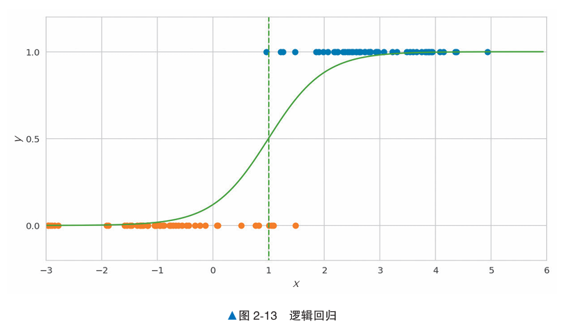

逻辑回归#
概述#
逻辑回归是一种用于有监督学习的分类任务的简单算法。逻辑回归通过计算数据属于各类别的概率来进行分类。利用这个概率，可以对某个事件发生或不发生进行二元分类（也可以三元以上分类）
这次的例子是，给定100天里，温度对应是否有积雪的情况，y轴为0时有积雪，为1无积雪。
x轴是摄氏度气温，可以看到高温没积雪，低温有积雪。

上图是对数据的逻辑回归，在0度的时候是12%，1度50%，2度88%。
算法说明#
逻辑回归根据数据x和表示其所属类别的标签y进行学习，计算概率。
如果标签是二元分类，则可以使用前面的y=0, 1这种二元数值表示。
与线性回归进行比较：#
相同点：基本思想，对数据x乘以权重向量w，再加上偏置w0，计算wT x+w0的值
不同点：逻辑回归的输出范围限制在01之间，使用了Sigmoid函数：
σ(z)=1/[1+exp(-z)]
对输入数据x使用Sigmoid函数，p=σ(wT x+w0) 得到标签为y的概率p。（二元分类使用0.5作为阈值）
误差函数使用逻辑损失。逻辑损失在分类失败时返回大值，在分类成功时为小值。
与在误差回归中引入的均方误差不同的是，我们无法通过式子变形来计算逻辑损失的最小值，因此需要采用梯度下降法通过数值计算来求解。（机器学习中经常会通过数值计算来近似求解）
示例代码#
以下代码就是对之前温度和积雪预测的实例，最后输出了各种概率。
import numpy as np
from sklearn.linear_model import LogisticRegression
X_train = np.r_[np.random.normal(3, 1, size=50),
np.random.normal(-1, 1, size=50)].reshape((100, -1))
y_train = np.r_[np.ones(50), np.zeros(50)]
model = LogisticRegression()
model.fit(X_train, y_train)
model.predict_proba([[0], [1], [2]])[:, 1]
# array([ 0.12082515, 0.50296844, 0.88167486])
详细说明#
决策边界：逻辑回归计算出来概率正好为50%的位置
决策边界的形状因使用的算法不同而有很大的不同。在平面的情况下，逻辑回归的决策边界是直线。其它算法的决策边界会更复杂
特征#
如何通过逻辑回归模型中的特征权重（系数）来理解每个特征对分类结果的影响。
在逻辑回归中，每个特征（比如鸢尾花的花瓣长、花瓣宽等）都有一个权重值。权重的符号（正或负）和大小告诉我们该特征对分类结果的影响：
正的权重：如果这个特征值增加，模型认为该数据属于目标类别的概率（这里是杂色鸢尾）就越大。
负的权重：如果这个特征值增加，模型认为该数据属于目标类别的概率反而会降低。
举个例子，这里用的是鸢尾花的数据，分类目标是预测一朵花是“杂色鸢尾”（versicolor）还是“山鸢尾”（setosa）。两个特征“花瓣长度”（petal length）和“萼片宽度”（sepal width）分别有正的和负的权重：
花瓣长度的权重是正的，表示如果花瓣长度越长，模型就越倾向于把这朵花分类为杂色鸢尾。
萼片宽度的权重是负的，表示如果萼片宽度越小，模型就越倾向于把这朵花分类为杂色鸢尾。
这样，通过查看权重的符号和大小，我们能直观地理解每个特征对分类结果的影响方向和程度。